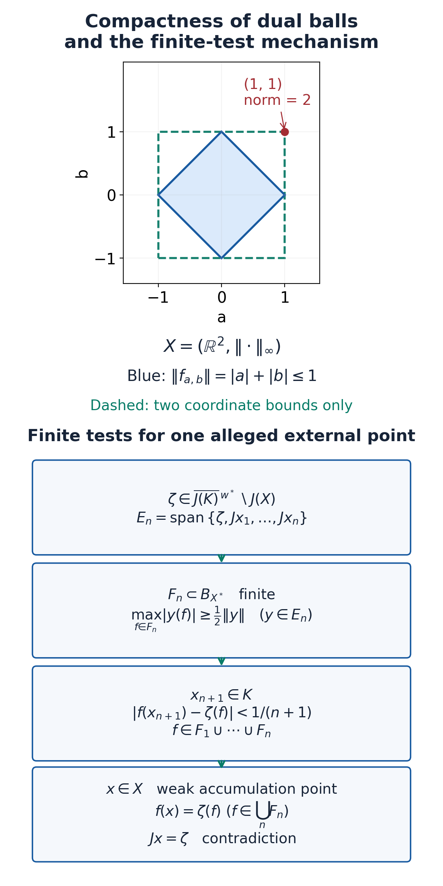

Weak compactness and second adjoints
Original exposition by the OA-MOD course project; CC0-1.0. The sequence proof retains its original programme authorship and CC0 attribution.
Compactness in a predual is compactness in the weak topology of a Banach space. A bounded family always has weak-star accumulation points in its bidual, but those points need not belong to the original space. The Banach–Alaoglu theorem supplies the first assertion. The Eberlein–Šmulian theorem explains why testing sequences is sufficient to prove the second assertion. We prove the dual-ball theorem and its missing foundations, import the programme's full sequence proof for arbitrary real or complex Banach spaces, and then return to the second adjoint and the range of an inclusion.
The entry assumptions are elementary set and linear algebra, the complete ordered real field, the definitions of metric and product topologies, and Zorn's maximality principle. Norm-preserving extension and the norming identity, NP1 proves real and complex Hahn–Banach extension and scalar norm detection in full. The compactness of scalar disks, finite-dimensional norm equivalence and the elementary sequence-topology facts are proved in AB-04 below. No separability, reflexivity or global faithful state is assumed.
Dual pairs and the canonical embedding
Let \(\mathbb F\) be \(\mathbb R\) or \(\mathbb C\), and let \(X\) be a normed space over \(\mathbb F\). Its continuous dual \(X^*\) consists of bounded linear functionals with norm
\[ \|f\|=\sup_{\|x\|\leq1}|f(x)|. \tag{AB.1} \]It is a Banach space even when \(X\) is incomplete. Indeed, for a norm-Cauchy sequence \((f_n)\), each scalar sequence \(f_n(x)\) is Cauchy. Set \(f(x)=\lim_n f_n(x)\). Linearity passes to the limit. The sequence of norms is bounded, so \(|f(x)|\leq C\|x\|\) for some finite \(C\). If \(\|f_n-f_m\|\leq\varepsilon\) for all sufficiently large \(m,n\), passage to the scalar limit gives \(|f_n(x)-f(x)|\leq\varepsilon\|x\|\), hence \(\|f_n-f\|\leq\varepsilon\).
The weak topology \(\sigma(X,X^*)\) is the topology generated by all evaluations \(x\mapsto f(x)\). A basic neighborhood imposes finitely many scalar inequalities. The weak-star topology \(\sigma(X^*,X)\) is similarly pointwise convergence on \(X\). These are different dual pairs.
The canonical map \(J:X\to X^{**}\) is
\[ (Jx)(f)=f(x). \tag{AB.2} \]The programme's Hahn–Banach norm identity gives \(\|Jx\|=\|x\|\), including \(x=0\). It also makes the weak topology Hausdorff: a nonzero difference is detected by a continuous functional. On \(J(X)\), the weak-star topology \(\sigma(X^{**},X^*)\) is exactly the transported weak topology of \(X\).
We shall need norm-closed linear subspaces to be weakly closed. If \(Y\subset X\) is norm closed and \(x\notin Y\), put \(d=\operatorname{dist}(x,Y)>0\). On \(Y+\mathbb F x\), define \(g(y+tx)=t\). This is well-defined and
\[ |g(y+tx)|=|t|\leq d^{-1}\|y+tx\|. \tag{AB.3} \]For \(t\ne0\), this follows by dividing by \(t\) in the distance estimate; the case \(t=0\) is immediate. Hahn–Banach extends \(g\) continuously to \(X\). It vanishes on \(Y\) and takes value \(1\) at \(x\), so a weak neighborhood of \(x\) misses \(Y\). Thus \(Y\) is weakly closed.
For a set \(K\subset X\), relative weak compactness means compactness of its weak closure in \(X\). A weak accumulation point of a sequence is a point every weak neighborhood of which contains terms with infinitely many indices. The point need not belong to \(K\).
Baire category and uniform boundedness
Baire theorem. A nonempty complete metric space is not a countable union of closed sets with empty interior.
Proof. Suppose the closed sets \(F_n\) have empty interior. Starting in any nonempty open set, choose a closed ball of positive radius at most \(1/2\) lying in that open set and missing \(F_1\). This is possible because the complement of \(F_1\) is open and dense. Inside the preceding ball's open concentric ball, choose a closed ball of positive radius at most \(2^{-n}\) missing \(F_n\). The same argument constructs nested closed balls. Their centers are Cauchy: two later centers lie in a ball of diameter at most \(2^{1-n}\). Completeness supplies a limit, and closedness puts it in every ball. It lies outside every \(F_n\), contradicting a covering. If a chosen open set contains an isolated point, a sufficiently small positive-radius ball is its singleton and the construction still works. \(\square\)
Uniform boundedness theorem. Let \(E\) be a Banach space and let \(\mathcal T\) be a family of bounded linear maps from \(E\) to a normed space \(F\). If \(\sup_{T\in\mathcal T}\|Tx\|<\infty\) for every \(x\in E\), then \(\sup_{T\in\mathcal T}\|T\|<\infty\).
Proof. For positive integers \(m\), set
\[ E_m=\{x\in E:\|Tx\|\leq m\text{ for every }T\in\mathcal T\}. \tag{AB.4} \]Each \(E_m\) is closed, and the pointwise bound makes their union \(E\). Baire supplies \(m,x_0,r>0\) with the open ball \(B(x_0,r)\subset E_m\). For \(\|y\|\leq1\), both \(x_0\) and \(x_0+(r/2)y\) belong to \(E_m\). Therefore
\[ \|Ty\|\leq \frac{2}{r} \bigl(\|T(x_0+(r/2)y)\|+\|Tx_0\|\bigr) \leq \frac{4m}{r}. \tag{AB.5} \]This is a uniform operator bound. The empty family and zero space satisfy the conclusion directly. \(\square\)
In particular, a weakly bounded set \(K\subset X\) is norm bounded even if \(X\) is merely normed. Apply uniform boundedness to \(J(K)\subset (X^*)^*\), whose domain \(X^*\) is Banach by the preceding proof. Weak boundedness is exactly pointwise boundedness of that family.
A weakly relatively compact set is weakly bounded because the continuous scalar image of a compact set is compact and bounded. For the last elementary assertion, the open disks of integral radius cover any scalar compact set, and a finite subcover gives a bound.
Filters and compact products
A proper filter \(\mathcal F\) on a nonempty set \(S\) is a family of subsets containing \(S\), excluding the empty set, closed under finite intersections and under passage to supersets. An ultrafilter is a proper filter maximal for inclusion.
Extension lemma. Every proper filter lies in an ultrafilter. An ultrafilter \(\mathcal U\) contains exactly one of \(A,S\setminus A\) for each \(A\subset S\).
Proof. Order the proper filters containing \(\mathcal F\) by inclusion. The union of a chain is a proper filter: finitely many chosen members lie in one filter of the chain. Zorn gives a maximal element. If \(A\notin\mathcal U\) and every \(U\in\mathcal U\) met \(A\), the supersets of the sets \(U\cap A\) would generate a larger proper filter. Hence some \(U\) misses \(A\), and \(S\setminus A\in\mathcal U\). Both complementary sets cannot belong to a proper filter. \(\square\)
A filter on a topological space converges to \(s\) if it contains every neighborhood of \(s\).
Compactness criterion. A space \(S\) is compact if and only if every ultrafilter on \(S\) converges to at least one point. In a Hausdorff space its limit is unique.
Proof. The empty space satisfies both assertions. On a nonempty compact space, the closed sets \(\overline U\), \(U\in\mathcal U\), have the finite-intersection property, since their finite intersections contain the corresponding nonempty filter intersections. They therefore have a common point \(s\): otherwise their open complements would cover \(S\) and have a finite subcover. If an open neighborhood \(V\) of \(s\) were absent from \(\mathcal U\), then \(S\setminus V\in\mathcal U\). This closed set would contain \(s\), a contradiction. Thus the filter converges.
Conversely, if an open cover has no finite subcover, its closed complements have the finite-intersection property and generate a proper filter. Extend it to \(\mathcal U\), and suppose \(\mathcal U\to s\). One member \(V\) of the cover contains \(s\), so both \(V\) and its complement belong to \(\mathcal U\), a contradiction. Finally, disjoint neighborhoods of two distinct Hausdorff points cannot both lie in a proper filter. \(\square\)
Compact product theorem. An arbitrary product of compact spaces is compact in its product topology.
Proof. A product with an empty factor is empty and compact; an empty product is a singleton. Otherwise let \(P=\prod_{i\in I}S_i\), and let \(\mathcal U\) be an ultrafilter on \(P\). For each coordinate projection \(\pi_i\), the family
\[ \mathcal U_i=\{A\subset S_i:\pi_i^{-1}(A)\in\mathcal U\} \tag{AB.6} \]is an ultrafilter, as follows directly from inverse images, finite intersections and the complement criterion. Compactness supplies a limit \(s_i\in S_i\). Choose these limits; the same choice principle underlying Zorn is in force. Every basic neighborhood of \(s=(s_i)_{i\in I}\) is a finite intersection of inverse images of coordinate neighborhoods, hence belongs to \(\mathcal U\). Thus \(\mathcal U\to s\), and the criterion proves compactness. No countability of \(I\) has been introduced. \(\square\)
Two elementary consequences will be used below. A closed subset of a compact space is compact: add its open complement to any cover and use a finite subcover. A compact subset of a Hausdorff space is closed: for an outside point, disjoint neighborhoods separating it from each compact-set point have a finite subfamily on the compact side; the intersection of the corresponding outside neighborhoods misses the set. A continuous image of a compact space is compact, by pulling back open covers.
Scalar and finite-dimensional compactness. A closed interval \([a,b]\) is compact. For a proof, let \(\mathcal U\) be an ultrafilter on it. Bisect the interval; at least one closed half belongs to \(\mathcal U\), since a finite union in an ultrafilter has a member in the ultrafilter. Repeat within the chosen half. This gives nested intervals \([a_n,b_n]\in\mathcal U\) of lengths at most \(2^{-n}(b-a)\). The supremum \(s=\sup_n a_n\) satisfies \(a_n\le s\le b_n\) for every \(n\). Each neighborhood of \(s\) contains a sufficiently short interval \([a_n,b_n]\), so belongs to \(\mathcal U\). The ultrafilter criterion proves compactness. The degenerate interval is a singleton. The lengths tend to zero because the complete ordered real field is Archimedean: if the integers had a finite supremum \(M\), an integer exceeding \(M-1\) would have its successor exceeding \(M\); and \(2^n\ge n+1\).
Finite real coordinate boxes are compact by the product theorem. The ordinary topology of \(\mathbb C^d\) is the real coordinate topology on \(\mathbb R^{2d}\); the inequalities
\[ \max(|\operatorname{Re}z|,|\operatorname{Im}z|)\le |z| \le |\operatorname{Re}z|+|\operatorname{Im}z| \]give both neighborhood comparisons. A closed scalar disk is a closed subset of a sufficiently large real box, so is compact. More generally, every closed bounded subset of \(\mathbb F^d\), in the maximum-coordinate norm \(|\alpha|_\infty=\max_j|\alpha_j|\), is compact: it is closed inside such a box.
Let \(e_1,\ldots,e_d\) be a basis of a nonzero finite-dimensional normed space \(V\), and put \(N(\alpha)=\|\sum_j\alpha_j e_j\|\). With \(C=\sum_j\|e_j\|\), the triangle inequality gives
\[ |N(\alpha)-N(\beta)|\le C|\alpha-\beta|_\infty. \tag{AB.F1} \]Thus \(N\) is continuous. On the compact coordinate sphere \(S=\{\alpha:|\alpha|_\infty=1\}\), its values are strictly positive by linear independence. There is a uniform positive lower bound: the open sets \(\{\alpha\in S:N(\alpha)>1/m\}\), for positive integers \(m\), form an increasing cover, and finitely many cover \(S\). Taking their largest index gives \(c>0\) with \(N\ge c\) on \(S\). Homogeneity now proves
\[ c|\alpha|_\infty\le \Big\|\sum_j\alpha_j e_j\Big\| \le C|\alpha|_\infty. \tag{AB.F2} \]The coordinate isomorphism and its inverse are continuous. A norm-closed bounded subset of \(V\) consequently pulls back to a closed bounded coordinate set and is compact. Comparing two norms through (AB.F2) proves norm equivalence. For \(V=\{0\}\), the only subsets are empty or singleton and the conclusions are immediate. This proves the compact unit-sphere input for every finite-dimensional subspace of a bidual, without any completeness assumption on the ambient normed space.
The two metric facts used by the sequence proof. In a compact metric space, every sequence has a convergent subsequence. For each positive integer \(m\), finitely many balls of radius \(2^{-m}\) cover the space. At least one contains infinitely many of the currently retained indices; retain those indices and continue. Choose increasing indices \(n_m\) from the nested infinite sets. The selected sequence is Cauchy, because its sufficiently late terms lie in one ball of arbitrarily small diameter. Its closed tail sets have the finite-intersection property in the compact space, hence a common point \(x\). A Cauchy sequence with this tail-closure point converges to \(x\): first choose a tail of diameter less than \(\varepsilon/2\), then a member of that tail at distance less than \(\varepsilon/2\) from \(x\). No completeness of an ambient space is required.
The closed linear span of a sequence in a normed space is separable. Finite linear combinations with rational coefficients in the real case, or coefficients in \(\mathbb Q+i\mathbb Q\) in the complex case, form a countable dense set in the span: approximate the finitely many coefficients and bound the error by the sum of their errors times the vector norms. Rational approximation follows from the Archimedean property by choosing an integer denominator with reciprocal below the prescribed error. Closure preserves this dense set. In a nonzero separable normed space, normalizing the nonzero members of a countable dense set gives a dense set in the unit sphere, since for a unit vector \(y\) and \(z\ne0\),
\[ \left\|\frac z{\|z\|}-y\right\|\le 2\|z-y\|. \tag{AB.F3} \]Indeed, insert \(z\) between the two vectors and use \(|\|z\|-1|\le\|z-y\|\). These facts supply the compact-metric and separable-sphere steps in Lemma 1.1 and Theorem 2.1 below.
Dual-ball compactness and the bidual criterion
Banach–Alaoglu theorem. For any real or complex normed space \(X\) and any \(R\geq0\), the closed ball \(RB_{X^*}\) is compact in \(\sigma(X^*,X)\).
Proof. For \(R>0\), consider the product of closed scalar disks
\[ P_R=\prod_{x\in X}\{z\in\mathbb F:|z|\leq R\|x\|\}. \tag{AB.7} \]Each disk is compact by the scalar-disk proof in AB-04, and the preceding product theorem makes \(P_R\) compact for arbitrary \(X\). Within this product impose the equations
\[ z_{ax+by}=az_x+bz_y \qquad(x,y\in X,\ a,b\in\mathbb F). \tag{AB.8} \]Each equation is closed because it involves only three continuous coordinate evaluations and scalar operations. Their simultaneous solution set is closed and compact. A solution defines a linear functional \(f(x)=z_x\) with \(|f(x)|\leq R\|x\|\), hence \(\|f\|\leq R\). Conversely every functional in the ball gives a solution. This identification is a homeomorphism, since both topologies are pointwise convergence on \(X\). If \(R=0\), the ball is the compact singleton \(\{0\}\). \(\square\)
The weak-star topology is Hausdorff, since distinct functionals differ on some vector. Dual balls are also weak-star closed, being the intersections of \(\{|f(x)|\leq R\|x\|\}\).
For completeness, every net in a compact space has an accumulation point. If \((z_d)_{d\in D}\) is a net, its tail sets have the finite-intersection property. Compactness of the closures of those tails supplies a point belonging to every tail closure. Each neighborhood of that point then meets each tail. Equivalently, there is a convergent subnet: index triples \((d,V,e)\) with \(e\geq d\) and \(z_e\in V\), where \(V\) is a neighborhood of the accumulation point. Order them by increasing \(d\) and \(e\), and decreasing \(V\). Given two triples, choose a common upper bound of their indices and then a point in the intersected neighborhood in a tail beyond that bound. This makes the triples directed; projection to \(e\) is order-preserving and cofinal, and the projected net converges. For a sequence, the tail-closure point has infinitely many terms in each neighborhood, counted by indices.
Bidual criterion. If \(K\subset X\) is bounded, where \(X\) is normed, then \(K\) is relatively weakly compact exactly when
\[ \overline{J(K)}^{\,\sigma(X^{**},X^*)}\subset J(X). \tag{AB.9} \]Proof. The weak-star closure \(L\) of \(J(K)\) lies in a closed bidual ball, hence is compact by Banach–Alaoglu. If \(L\subset J(X)\), transport it through the homeomorphism of dual pairs in the first section: \(J^{-1}(L)\) is exactly the weak closure of \(K\), and is compact. Conversely, the image under \(J\) of a compact weak closure is weak-star compact, hence closed in the Hausdorff bidual. It contains \(J(K)\), so contains \(L\). \(\square\)
The conclusion is stronger than mere boundedness: Alaoglu puts the accumulation points in \(X^{**}\), whereas (AB.9) requires that they remain in \(J(X)\).
The programme sequence criterion and its use here
The following Lemma 1.1 and Theorem 2.1 are reproduced from Weak sequences and compact convex hulls, in the programme's Operator-algebra foundations: tensor products, disintegration and semicontinuity, written by GPT-6.1 Sol (OpenAI), Ultra, September 2026, under CC0. Their statement and proof paragraphs are unchanged. The norm-extension input is proved in NP1; AB-02 proves the canonical isometry and weak closedness; AB-03 proves uniform boundedness; AB-04 supplies finite-dimensional compactness and the metric and separability facts; and AB-05 proves Banach–Alaoglu. The countable-product metric is verified after the reproduced proof. No later barycenter, measure or convex-hull theorem from that programme text is used.
Exact CC0 programme proof.
1. Countably many tests on a separable part
Lemma 1.1. If \(V\) is a finite-dimensional subspace of \(X^{**}\), there is a finite set \(F\subseteq B_{X^*}\) such that
\[ \|v\|\leq2\max_{f\in F}|v(f)|\qquad(v\in V). \]If \(Y\) is a separable normed space, a countable set of functionals in \(B_{Y^*}\) separates its points. Every weakly compact subset of \(Y\) is metrizable for its weak topology.
Proof. For each unit vector \(v\in V\), the definition of the bidual norm gives \(f_v\in B_{X^*}\) with \(|v(f_v)|>3/4\). The same value exceeds \(1/2\) on a sufficiently small norm neighborhood of \(v\) in the unit sphere. That sphere is compact, so finitely many of these neighborhoods cover it. Their functionals give the inequality by homogeneity. When \(V=\{0\}\), a single zero functional suffices.
For nonzero separable \(Y\), choose a dense sequence \((y_j)\) in its unit sphere and \(f_j\in B_{Y^*}\) with \(f_j(y_j)=1\), using Hahn–Banach. If \(\|y\|=1\), choose \(j\) with \(\|y-y_j\|<1/2\); then \(|f_j(y)|>1/2\). Thus the \(f_j\) separate points. The map
\[ y\longmapsto(f_1(y),f_2(y),\ldots) \]is a continuous injection from a weakly compact set into a countable product of scalar spaces. A continuous bijection from a compact space to a Hausdorff image is a homeomorphism: images of closed sets are compact and hence closed. The product is metrizable, so the compact set is metrizable. The zero space is immediate. \(\square\)
The relative weak topology on a norm-closed subspace \(Y\subseteq X\) is its own weak topology. Every functional in \(Y^*\) extends to \(X^*\), and every restriction from \(X^*\) belongs to \(Y^*\).
2. The sequence criterion
Theorem 2.1 (Eberlein–Šmulian). For \(A\subseteq X\), where \(X\) is Banach, the following are equivalent:
- The weak closure of \(A\) is weakly compact.
- Every sequence in \(A\) has a subsequence converging weakly to an element of \(X\).
- Every sequence in \(A\) has a weak cluster point in \(X\): each neighborhood of that point meets arbitrarily late terms.
The limit in assertion 2 need not belong to \(A\).
Proof of 1 implies 2. For a sequence \((a_n)\subseteq A\), let \(Y\) be its norm-closed linear span. It is separable and weakly closed. The intersection of \(Y\) with the compact weak closure of \(A\) is therefore weakly compact, and its topology agrees with the weak topology of \(Y\). Lemma 1.1 makes it a compact metric space. Every sequence in a compact metric space has a convergent subsequence: successive finite covers by balls of radii \(2^{-m}\) select nested infinite sets of indices, and a diagonal selection is Cauchy and has a limit. Its convergence here is weak convergence in \(X\).
Proof of 2 implies 3. The limit of a convergent subsequence is a cluster point in the stated sense.
Proof of 3 implies 1. For every \(f\in X^*\), its values on \(A\) are bounded. Otherwise choose \(a_n\in A\) with \(|f(a_n)|>n\); continuity of \(f\) makes a weak cluster point impossible. Uniform boundedness, applied to \(J(A)\) on the Banach space \(X^*\), makes \(A\) norm bounded. Banach–Alaoglu now makes
\[ L=\overline{J(A)}^{\,\sigma(X^{**},X^*)} \]compact: it is closed inside a bounded weak-star compact ball. We show \(L\subseteq J(X)\). Empty \(A\) is harmless; suppose \(z\in L\).
Choose \(a_1\in A\). Inductively let
\[ V_n=\operatorname{span}\{z,Ja_1,\ldots,Ja_n\} \]and choose a finite norming set for \(V_n\) by Lemma 1.1. Let \(F_n\) be the union of that set with all previously chosen sets. Since \(z\in L\), choose \(a_{n+1}\in A\) with
\[ |f(a_{n+1})-z(f)|<\frac1{n+1}\qquad(f\in F_n). \]Put \(F=\bigcup_nF_n\) and \(V=\overline{\bigcup_nV_n}^{\|\cdot\|}\). Passing to norm limits in the finite-dimensional estimates gives
\[ \|v\|\leq2\sup_{f\in F}|v(f)|\qquad(v\in V). \]For each fixed \(f\in F\), the chosen scalar values satisfy \(f(a_n)\to z(f)\). Assertion 3 supplies a weak cluster point \(a\in X\). It belongs to the norm-closed span of \((a_n)\), because that subspace is weakly closed. The scalar convergence and continuity of \(f\) force \(f(a)=z(f)\): if these values differed, a neighborhood of \(a\) defined by \(f\) would miss all sufficiently late terms. Hence \(Ja\in V\). Applying the norming estimate to \(Ja-z\) gives \(Ja=z\).
Thus \(L\subseteq J(X)\). On \(J(X)\) the relative weak-star topology is exactly the weak topology of \(X\), so \(J^{-1}(L)\) is a weakly compact set containing \(A\). Its closed subset \(\overline A^{\rm weak}\) is compact. \(\square\)
The construction makes countably many tests for one prescribed bidual point. It does not assert that the weak topology of the whole Banach space is metrizable.
Using the provider's notation in this course. Its three conditions are relative weak compactness, weakly convergent subsequences with limits in the original space, and weak cluster points there. “Arbitrarily late terms” is equivalent to infinitely many indices in every neighborhood. A compact dual ball alone is insufficient: its cluster point may lie outside the original space's canonical image.
For the diagram and examples below, write the provider's countable test map as
\[ C\longrightarrow\mathbb F^{\mathbb N},\qquad x\longmapsto(f_m(x))_m. \tag{AB.10} \]Here \(C\) is the weakly compact part in the closed separable span of the chosen sequence. The metric \(\sum_m2^{-m}\min(1,|z_m-w_m|)\) gives the product topology: any finitely many coordinate restrictions contain a small metric ball; conversely, make the geometric tail small and then bound the finitely many remaining coordinates. Compactness and the separating map give the homeomorphism used in the quoted lemma.
For a proposed \(\zeta\) outside \(J(X)\), rename its finite-dimensional space \(V_n\) as
\[ E_n=\operatorname{span}\{\zeta,Jx_1,\ldots,Jx_n\}. \tag{AB.11} \]If \(F_n\) denotes just the new finite norming family chosen at stage \(n\), the quoted lemma says
\[ \max_{f\in F_n}|y(f)|\ge\tfrac12\|y\| \qquad(y\in E_n). \tag{AB.12} \]The provider instead uses the union of all families up to that stage as its \(F_n\). With the noncumulative notation used in our picture, its selection is
\[ |f(x_{n+1})-\zeta(f)|<1/(n+1) \quad(f\in F_1\cup\cdots\cup F_n). \tag{AB.13} \]Thus the pictured constants and domains are exactly the imported construction. The union separates only the norm-closed span generated after this particular alleged external bidual point; it is not a countable total set on the whole dual or bidual. The two notations describe the same tests.
Naturality, norm and the range of an inclusion
Let \(X,Y\) be complex Banach spaces and \(T:X\to Y\) a bounded linear map. Write \(j_X:X\to X^{**}\) for evaluation, \(j_X(x)(f)=f(x)\). The adjoint and second adjoint are
\[ T^*f=f\circ T,\qquad (T^{**}F)(f)=F(T^*f) \quad(f\in Y^*,\ F\in X^{**}). \]The definitions give \(\|T^{**}\|\leq\|T^*\|\leq\|T\|\). For \(x\in X\) and \(f\in Y^*\),
\[ (T^{**}j_Xx)(f)=j_Xx(T^*f)=f(Tx)=(j_YTx)(f). \]Thus \(T^{**}j_X=j_YT\). Since both evaluation maps are isometries, this identity supplies the reverse norm inequality, so
\[ \|T^{**}\|=\|T^*\|=\|T\|. \]The equality includes zero spaces and the zero map. If \(F_\lambda\to F\) in \(\sigma(X^{**},X^*)\), then for each \(f\in Y^*\), \((T^{**}F_\lambda)(f)=F_\lambda(T^*f)\to F(T^*f)\). This is precisely weak-star continuity of \(T^{**}\). Pairing with each functional also proves \((ST)^{**}=S^{**}T^{**}\) whenever \(ST\) is defined, and \((1_X)^{**}=1_{X^{**}}\).
Now let \(i:B\hookrightarrow A\) be an isometric linear inclusion of Banach spaces. Hahn–Banach extends every \(f\in B^*\) to some \(g\in A^*\) of the same norm. Hence \(i^*\) sends the closed unit ball of \(A^*\) onto that of \(B^*\), and
\[ \|i^{**}F\| =\sup_{\|g\|\leq1}|F(i^*g)| =\sup_{\|f\|\leq1}|F(f)| =\|F\|. \]To identify the range, write \((\ker i^*)^\perp=\{G\in A^{**}:G(g)=0\text{ for all }g\in\ker i^*\}\). Every \(i^{**}F\) belongs to this annihilator. Conversely, for \(G\) in the annihilator define \(F(f)=G(g)\), where \(g\) is any extension of \(f\). Two such extensions differ by an element of \(\ker i^*\), so this is well-defined. Choosing a norm-preserving extension shows \(|F(f)|\leq\|G\|\|f\|\); thus \(F\in B^{**}\) and \(i^{**}F=G\). We have proved
\[ i^{**}(B^{**})=(\ker i^*)^\perp. \]This range is weak-star closed: it is the intersection, over \(g\in\ker i^*\), of the kernels of the weak-star continuous evaluations \(G\mapsto G(g)\).
Example. Include \(\mathbb C\) in \((\mathbb C^2,\|\cdot\|_\infty)\) by \(i(z)=(z,0)\). Its adjoint is \(i^*(a,b)=a\) on the dual \((\mathbb C^2,\|\cdot\|_1)\). The annihilator of \(\ker i^*=\{(0,b)\}\) is \(\{(z,0)\}\), exactly the range of \(i^{**}=i\) under the finite-dimensional bidual identifications.
Exact models and the limits of sequence tests
Take \(X=(\mathbb R^2,\|\cdot\|_\infty)\). Write a functional as \(f_{a,b}(x,y)=ax+by\). Its norm is
\[ \|f_{a,b}\|=|a|+|b|. \tag{AB.14} \]The upper bound follows from the triangle inequality on the unit square. For equality choose \(x=\operatorname{sgn}(a)\) and \(y=\operatorname{sgn}(b)\), allowing either coordinate to be zero if its coefficient is zero. Thus the dual ball is the diamond with vertices \((1,0),(0,1),(-1,0),(0,-1)\). The separate tests on the two coordinate vectors give only the square \(|a|\leq1,|b|\leq1\). The point \((1,1)\) passes those two tests but has functional norm \(2\), since \(f_{1,1}(1,1)=2\). The full Alaoglu construction imposes bounds at every vector and the linearity equations, not just separate bounds at two selected vectors.

Figure. In the upper panel the blue diamond is the exact ball in (AB.14); the surrounding dashed square records only the two coordinate bounds. The marked point \((1,1)\) fails the full norm bound. The lower panel is a typed schematic of the contradiction in the sequence theorem: \(E_n\subset X^{**}\), the finite test set \(F_n\subset B_{X^*}\), and the selected \(x_{n+1}\in K\) have exactly the domains and constants of (AB.11)–(AB.13). It is not a picture of an infinite-dimensional Banach space embedded in the plane. The countable tests depend on the alleged \(\zeta\notin J(X)\) and the constructed sequence; they do not separate all of \(X^{**}\). The original reproducible drawing source is assets/render_banach_compactness.py.
Problem 1: a bounded set need not be relatively weakly compact. In \(X=\ell^1(\mathbb N)\), let \(e_n\) be the coordinate unit vectors. Prove that \((e_n)\) has no weak accumulation point in \(X\), although every term has norm \(1\).
Solution. Each coordinate evaluation belongs to \(X^*\). If \(x\) were a weak accumulation point, a coordinate with \(x_j\ne0\) would give a neighborhood containing at most the single term \(e_j\); hence every coordinate of \(x\) is zero. But \(f(x)=\sum_jx_j\) defines a bounded linear functional of norm \(1\), and \(f(e_n)=1\) for every \(n\), whereas \(f(0)=0\). A weak neighborhood determined by \(f\) excludes the entire sequence. Therefore there is no weak accumulation point. The sequence theorem proves failure of relative weak compactness; the bidual criterion puts some weak-star accumulation point outside \(J(X)\).
Problem 2: a weak-star compact dual ball need not be sequentially compact. Let \(I\) be the set of all subsets of \(\mathbb N\), take \(X=\ell^1(I)\), and regard \(X^*\) as \(\ell^\infty(I)\). For \(n\geq1\), put
\[ u_n(A)=\mathbf1_A(n)\qquad(A\in I). \tag{AB.15} \]Show that this sequence in the dual unit ball has no weak-star convergent subsequence.
Solution. If a subsequence has indices \(n_1<n_2<\cdots\), take \(A=\{n_2,n_4,n_6,\ldots\}\in I\). Evaluation on the coordinate vector \(\delta_A\in\ell^1(I)\) gives the alternating scalar sequence \(u_{n_j}(A)\), which does not converge. Thus this subsequence is not weak-star convergent. Alaoglu is not contradicted: compactness gives a convergent subnet, and the Banach sequence theorem concerns the weak topology of a Banach space, not an arbitrary weak-star topology.
To justify the dual identification for arbitrary \(I\), define \(\ell^1(I)\) using \(\sum_i|x_i|=\sup_{F\subset I\text{ finite}}\sum_{i\in F}|x_i|\). Every such vector has countable support: for each positive integer \(m\), only finitely many coordinates have modulus at least \(1/m\). Finite-support vectors are norm dense. A bounded family \(v\in\ell^\infty(I)\) therefore defines \(f_v(x)=\sum_i v_i x_i\), with norm \(\sup_i|v_i|\); testing \(\delta_i\) proves the reverse inequality even if the supremum is not attained. Conversely a bounded functional is determined by the numbers \(f(\delta_i)\), which form a bounded family, and density proves this formula on all of \(\ell^1(I)\).
This \(\ell^1(I)\) is Banach. For a norm-Cauchy sequence \(x_n\), coordinate limits give \(x_i\). If \(\|x_n\|_1\leq C\), every finite coordinate sum of the limit is at most \(C\), so \(x\in\ell^1(I)\). For fixed sufficiently large \(n\), the Cauchy bound \(\|x_n-x_m\|_1\leq\varepsilon\) passes to every finite sum as \(m\to\infty\). Taking its supremum yields \(\|x_n-x\|_1\leq\varepsilon\).
Problem 3: where is completeness actually used? Locate the complete metric space used for boundedness, and decide whether the proof of the sequence theorem requires completeness of the original \(X\).
Solution. Uniform boundedness is applied on \(X^*\), which is complete even if \(X\) is merely normed. Alaoglu requires no completeness of \(X\). The two directions of the sequence proof use only a closed separable normed subspace, its weak closedness from Hahn–Banach, finite-dimensional compactness and the Banach dual \(X^*\). They never take an arbitrary norm-Cauchy limit in \(X\). Consequently the displayed proof also establishes the three equivalences for normed spaces, with accumulation points and subsequence limits required to lie in that original normed space. The Banach-space statement is the one needed by the predual application. Countability is confined to the span of a particular sequence and to the finite families chosen after one alleged external bidual point; no countable total set on the whole space or its dual is assumed.
References and proof provenance
The dual-ball and sequence theorems are the classical Banach–Alaoglu and Eberlein–Šmulian theorems. The proofs used here are written above and in NP1; the sequence proof retains its original programme attribution.
- Wha Suck Lee, Extension of the Erberlein-Smulian Theorem to Normed Spaces, arXiv:math/0504592v1, Sections 3–4 and the appendix. This freely accessible paper treats the normed-space extension in Problem 3. Its finite-test construction is relevant to the sequence theorem; the proof above passes estimates through a norm-closed span and does not assume that weak-star convergence implies norm convergence.
- Tomasz Kochanek, Combinatorics in Banach space theory, Lecture 4, Lemma 4.3, p. 2. This freely accessible lecture treats the naturality of the second adjoint. AB-01 proves naturality directly and also proves the norm and annihilator-range assertions needed here.
- Yury Kudryashov and Heather Macbeth, mathlib's Hahn–Banach module, exists_extension_norm_eq and exists_dual_vector. NP1 supplies the real extension, complex conversion and norming proofs used in this lesson.
The finite-dimensional and metric additions in AB-04 are original exposition by GPT-6 Astra (OpenAI), Ultra, October 2026, under CC0. The existing programme sequence proof remains attributed to its original author. These Banach-space results apply to preduals after the relevant operator-algebra identification has been proved; they do not by themselves prove an operator-algebra compactness criterion.